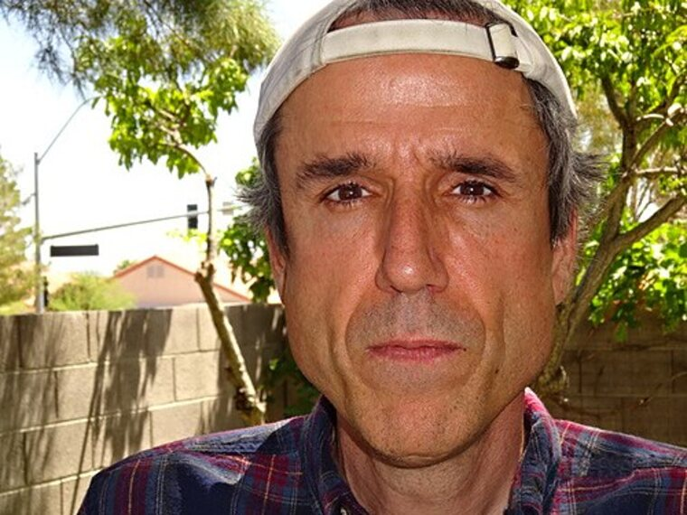
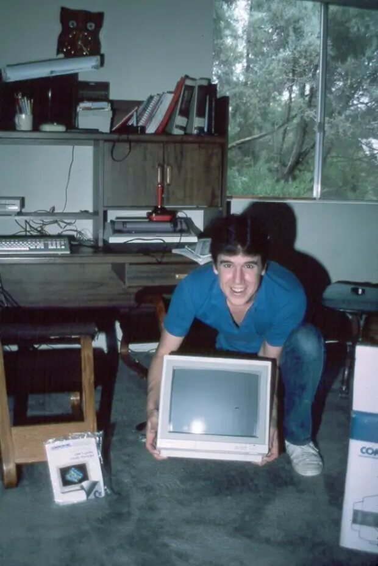
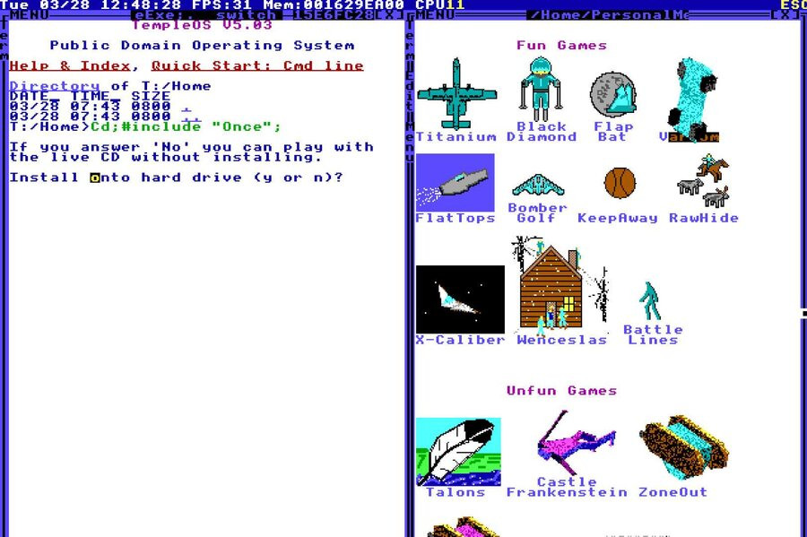
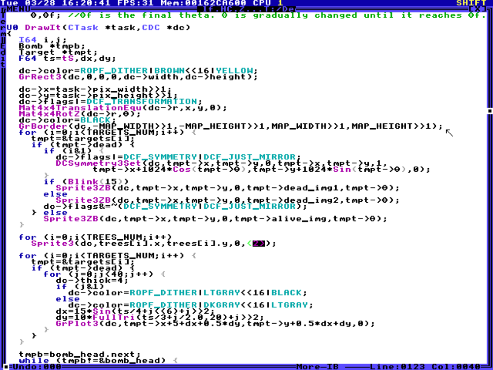

Главная → Статьи → Терри Дэвис
Терри Дэвис: человек, который построил храм в 120 000 строк
Рубрика: биография. 13 ноября 2026 года. Время чтения: около 12 минут.

Терри Дэвис, 2017 год. Фото: Wikimedia Commons.
Он был инженером-электриком с магистерской степенью, сотрудником Ticketmaster и автором операционной системы, которую написал целиком сам. Он был болен шизофренией. Одна и та же история — и ужасная, и поразительная, и её слишком часто пересказывают наполовину.
Содержание статьи
- Инженер из Висконсина
- 1996 год: трещина
- Как появился «храм»
- Отношение к Linux и к открытому коду
- Видеоблоги
- 2018 год
- Память и значение
- Смотреть и читать
- Источники
Инженер из Висконсина
Теренс Эндрю Дэвис родился 15 декабря 1969 года в Вест-Аллисе, штат Висконсин, седьмым ребёнком в семье инженера. Семья часто переезжала: Вашингтон, Мичиган, Калифорния, Аризона. В начальной школе он впервые сел за Apple II, а подростком выучил ассемблер на Commodore 64 — как и многие будущие системные программисты, он начинал с машин, у которых было больше ограничений, чем возможностей.
В 1994 году он получил степень магистра в области электротехники в Университете штата Аризона. Позже он с характерной прямотой объяснял, почему гордится именно этим дипломом: электротехника требует «настоящей математики», а разработка программного обеспечения — нет. Уже в этой интонации слышен человек, который всю жизнь будет спорить с индустрией, а не подстраиваться под неё.
Несколько лет он работал в Ticketmaster — на машинах VAX. Это важно: до того, как он стал героем интернет-легенд, он был обычным промышленным инженером с задачами, сроками и чужим кодом. Опыт корпоративной разработки никуда не исчез: он виден в том, насколько аккуратно устроены внутренние инструменты TempleOS — компилятор, отладчик и редактор.
Дэвис рос в католической семье, но в университетские годы был воинствующим атеистом и называл себя приверженцем научного материализма. Человек, который потом утверждал, что видел Бога и разговаривает с ним, в первой половине жизни был убеждён, что разговаривать там не с кем.
1996 год: трещина
Весной 1996 года, когда ему было 26, начались маниакальные эпизоды. По его собственным воспоминаниям, он начал «видеть людей в костюмах» рядом с собой, чувствовал слежку и внезапно передал крупные суммы на благотворительность — то, чего раньше никогда не делал. Он описывал этот период как череду прозрений, а врачи — как психическое расстройство: сначала ему ставили биполярное расстройство, позже — шизофрению.
С марта 1996 года он попадал в психиатрическое отделение примерно раз в полгода. Между госпитализациями была обычная жизнь: работа, аренда, машина — и программирование. Дэвис не прекращал писать код: он превратил его в способ удерживать мир, в котором рассыпаются причинно-следственные связи.

Терри Дэвис с монитором Commodore, середина 1980-х. Фото: Wikimedia Commons.
Он сам позже связывал начало болезни с религиозным «откровением» — и это не метафора: в его картине мира именно тогда Бог впервые к нему обратился. Для человека, который много лет отстаивал материализм, такой разворот был не дрейфом, а обвалом. Пересказывать это как «программист был сумасшедшим» — значит потерять главное: масштаб и методичность, с которыми он потом строил свою систему ценой всего остального.
Важно, что болезнь была не единственной причиной. Была бедность, было отсутствие постоянного жилья, были конфликты с модераторами и работодателями, была семья, с которой он постепенно перестал общаться. Разбирая биографию Дэвиса, исследователи снова и снова отмечают: его история — в первую очередь история человека, лишённого поддержки, а не история «безумного гения».
Как появился «храм»
Если упростить до одного абзаца: он начал писать собственную операционную систему примерно с 1993 года, назвал её сначала «J Operating System», затем «LoseThos» (отсылка к сцене из фильма «Взвод»), затем «SparrowOS», и только в 2013 году — «TempleOS». Первый публичный релиз под именем J датируется 2005 годом, финальная версия 5.03 — ноябрём 2017-го.
Своей задачей Дэвис называл восстановление атмосферы Commodore 64: маленькая система, которая целиком понятна одному человеку, где можно писать игру за вечер и видеть результат. Он считал важным, что TempleOS не похожа на современные системы: в ней нет сети, нет многопользовательского режима, нет виртуализации. Есть только сам компьютер, экран 640×480 и шестнадцать цветов.
По его словам, ограничения были заданы не инженерными соображениями, а прямыми указаниями свыше: 640×480 — чтобы «дети могли рисовать иллюстрации для Бога», шестнадцать цветов — чтобы не отвлекаться, одноголосый звук — чтобы музыка была простой. Так эти ограничения сложились в узнаваемый стиль: интерфейс, который одновременно похож на DOS, на Turbo C и на что-то нарисованное ребёнком в 1988 году.

Экран установки TempleOS 5.03 и меню встроенных игр. Скриншот: xda-developers.com.
- Размер. Полная система, включая компилятор, редактор, игры и документацию, занимает несколько мегабайт.
- Строки кода. По разным оценкам — от 100 000 до 120 000 строк, написанных одним человеком без сторонних библиотек.
- Релизы. 2005 год — J Operating System; имя TempleOS появилось в 2013 году; последняя версия — 5.03 (ноябрь 2017).
- Лицензия. Public domain: автор отказался от прав и разрешил делать с кодом что угодно.
Отношение к Linux и к открытому коду
Дэвис жил в мире, где Linux уже был стандартом, и охотно это замечал. Он не любил Linux за то, что та требовала от пользователя слишком многого: разобраться в дистрибутивах, драйверах, зависимостях. В его риторике TempleOS была «правильной» операционной системой: одна, целая, понятная, собранная одним человеком, без слоёв абстракции и без коллективной ответственности, которая размывает качество.
При этом его собственный проект был открытым по максимуму: исходники выложены в публичное достояние, а в комплект входит не только ядро, но и компилятор HolyC, редактор и полный текст системы. Он выпускал видео, в которых методично показывал, как компилируется ядро и как работают внутренние инструменты, — иначе говоря, он был более последовательным сторонником открытости, чем многие его критики.
Люди прочитают: «это про жалкого шизофреника, который сделал паршивую операционную систему». Моя точка зрения: «Бог сказал, что я сделал Его храм».
Терри Дэвис в письме журналисту Vice, 2014 год.
В этой цитате весь конфликт. Один и тот же текст можно читать как историю болезни и как историю человека, который сделал невозможное. Обе интерпретации частичны; полная картина — в том, что верно и то, и другое одновременно.
Видеоблоги
С начала 2010-х Дэвис вёл видеоблог: включал камеру, показывал экран, комментировал свой код, спорил со зрителями, пел гимны и играл на барабанах. Его каналы на YouTube неоднократно закрывали за грубость, поэтому записи сохранились в основном в архивах. Он называл себя «самым умным программистом, который когда-либо жил», и в этой фразе была и бравада, и защита: единственный способ объяснить миру, зачем он делает то, что делает.
Эти видео — ценный технический источник. В них видно, как устроен TempleOS изнутри: как выглядит компилятор, как вставляются ассемблерные блоки, как работает отрисовка трёхмерной графики на процессоре, без видеокарты. Именно поэтому архив его записей до сих пор разбирают энтузиасты.

Код TempleOS в редакторе: работа с графическим контекстом и спрайтами. Скриншот: xda-developers.com.
В конце 2017 года он опубликовал видео, где сказал, что удалил большую часть своих материалов, «чтобы не делать интернет грязным», и что он тяжело болен. Это одно из самых честных высказываний в истории открытого кода: человек, отдавший проекту десять лет, извинялся перед сетью за то, что она видела его худшие дни.
2018 год
Последние месяцы жизни Дэвис провёл без постоянного жилья — сначала в Лас-Вегасе, потом в Орегоне, в городе Даллес. Поклонники привозили ему вещи и деньги, предлагали жильё, но от дальней помощи он отказывался. 11 августа 2018 года его сбил поезд; ему было 48 лет.
Новость разошлась по техническим форумам за несколько часов. Люди, которые годами смеялись над его видео, писали некрологи. Издание OSNews вспоминало, что «Дэвис был явно одарённым программистом — написать целую операционную систему это немалое достижение, — и было грустно видеть, как на него влияет его болезнь».
| Год | Событие |
|---|---|
| 1969 | Рождение в Вест-Аллисе, Висконсин. |
| 1994 | Магистерская степень по электротехнике, Университет штата Аризона. |
| 1990-е | Работа в Ticketmaster; начало разработки собственной системы. |
| 1996 | Первые маниакальные эпизоды и госпитализации; позже — диагноз «шизофрения». |
| 2005 | Публичный релиз J Operating System. |
| 2013 | Система получает имя TempleOS. |
| 2017 | Последняя версия 5.03; участие в выставке outsider art во Франции. |
| 2018 | Гибель в Даллесе, Орегон, 11 августа. |
Память и значение
После смерти Дэвиса его систему стали запускать чаще, чем при жизни. Появились эмуляторы, порты, архивы видео и целые сайты, посвящённые HolyC. В 2017 году, ещё при жизни автора, TempleOS показали на выставке outsider art в Бургундии — и это, пожалуй, самая точная характеристика проекта: это не «продукт», это произведение, сделанное человеком вне индустрии.
Инженер, сравнивший TempleOS со «строительством небоскрёба в одиночку», был прав в оценке, но неточен в метафоре. Небоскрёбы строят по чертежам и в срок. TempleOS росла десять лет, переписывалась, ломалась и возрождалась — как дом, который строят для себя, а не на продажу.
Чему учит эта история
- Психическое заболевание — не романтика. Оно разрушает жизнь и требует лечения, а не аплодисментов.
- Одиночная разработка возможна: система из 120 000 строк, написанная одним человеком, существует и работает.
- Сообщество важно: без поддержки талант остаётся один на один с болезнью и бедностью.
- Код — это документ: TempleOS рассказывает о своём авторе больше, чем любое интервью.
Следующая статья — техническая: как именно устроена TempleOS и что такое HolyC.
Смотреть и читать
Записи самого Дэвиса — главный источник. Каналы неоднократно удалялись, поэтому ниже — сохранённые копии и видео, которые остались у поклонников.
Документальный разбор TempleOS
«TempleOS — Down the Rabbit Hole», канал Fredrik Knudsen. Подробный разбор биографии и устройства системы.
Терри Дэвис показывает код встроенных игр
Запись 2015 года из архива канала Absolute Terry Davis, где собраны сохранившиеся стримы автора.
Ещё два сохранённых видео из того же архива
- «632 — Fixing A New Compiler Bug I'm Yet To Discover (TempleOS | Livestream)» — 2016 год, отладка компилятора HolyC.
- «716 — Learning Together About... Classes? (TempleOS | Livestream)» — 2016 год, объяснение классов в HolyC.
Архивы
- Internet Archive: TempleOSVideos — оцифрованные записи, включая прохождения After Egypt и компиляцию ядра.
- Internet Archive: полный архив — видео, исходники и копии сайта.
- templeos.org — официальный сайт проекта.
- github.com/cia-foundation/TempleOS — исходный код системы.
Источники
- Wikipedia: Terry A. Davis — биография, даты, работа в Ticketmaster, болезнь.
- Jesse Hicks. God's Lonely Programmer — Vice, 2014: главный текст прижизненных интервью.
- David Cassel. The Troubled Legacy of Terry Davis — The New Stack, 2018.
- Wikipedia: TempleOS — датировки релизов и цитаты.
- Internet Archive — архив записей и исходников.
Материал подготовлен в учебных целях. Тема психических расстройств освещается без сенсационности: если вам или кому-то рядом нужна помощь, обратитесь к специалисту.
← Предыдущая: Линус Торвальдс | Следующая: TempleOS и HolyC →